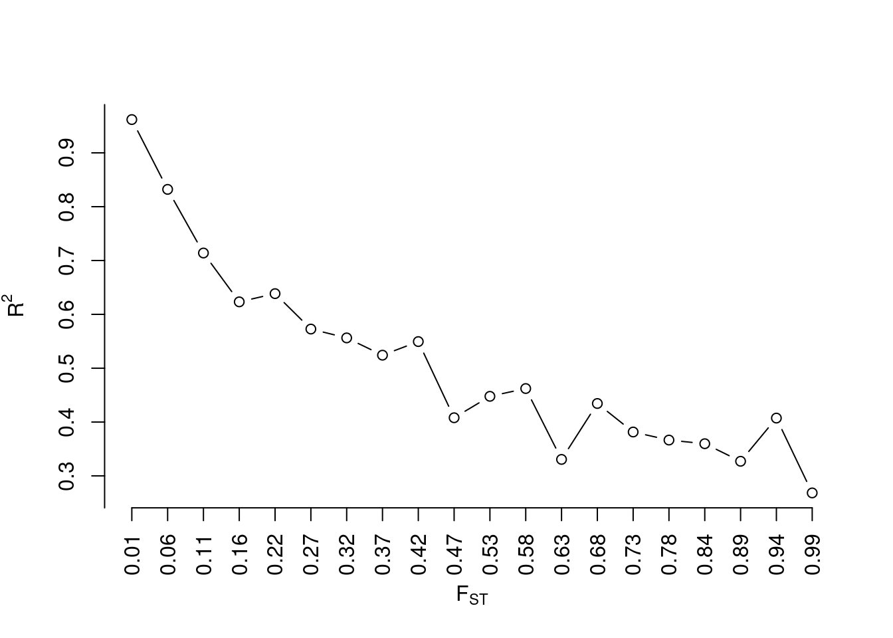
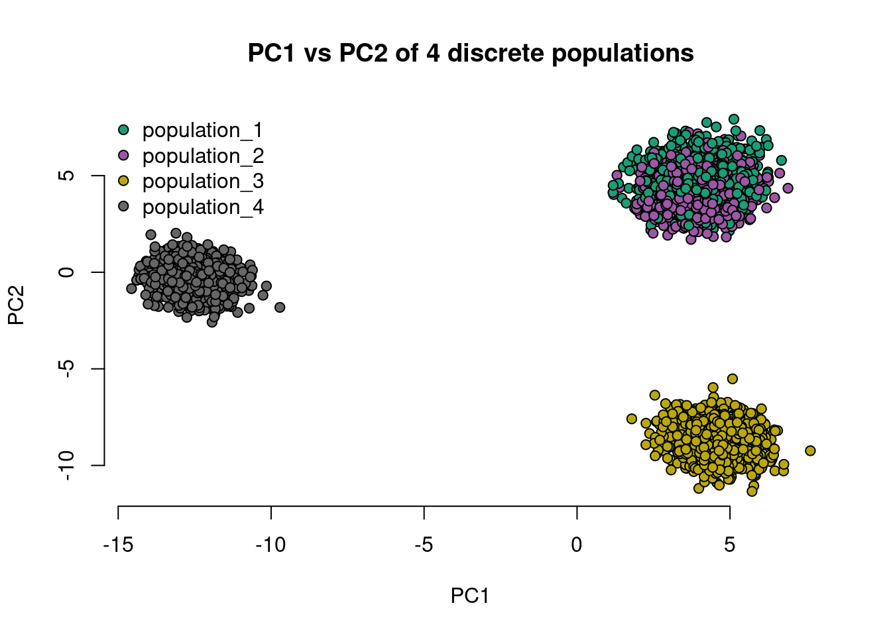

Simulating discrete and continuous populations
Temi
2022-05-13
Last updated: 2022-05-14
Checks: 7 0
Knit directory: isiro/
This reproducible R Markdown analysis was created with workflowr (version 1.7.0). The Checks tab describes the reproducibility checks that were applied when the results were created. The Past versions tab lists the development history.
Great! Since the R Markdown file has been committed to the Git repository, you know the exact version of the code that produced these results.
Great job! The global environment was empty. Objects defined in the global environment can affect the analysis in your R Markdown file in unknown ways. For reproduciblity it’s best to always run the code in an empty environment.
The command set.seed(20220512) was run prior to running
the code in the R Markdown file. Setting a seed ensures that any results
that rely on randomness, e.g. subsampling or permutations, are
reproducible.
Great job! Recording the operating system, R version, and package versions is critical for reproducibility.
Nice! There were no cached chunks for this analysis, so you can be confident that you successfully produced the results during this run.
Great job! Using relative paths to the files within your workflowr project makes it easier to run your code on other machines.
Great! You are using Git for version control. Tracking code development and connecting the code version to the results is critical for reproducibility.
The results in this page were generated with repository version 6c14148. See the Past versions tab to see a history of the changes made to the R Markdown and HTML files.
Note that you need to be careful to ensure that all relevant files for
the analysis have been committed to Git prior to generating the results
(you can use wflow_publish or
wflow_git_commit). workflowr only checks the R Markdown
file, but you know if there are other scripts or data files that it
depends on. Below is the status of the Git repository when the results
were generated:
Ignored files:
Ignored: .Rhistory
Unstaged changes:
Deleted: analysis/simulating_genotypes.Rmd
Note that any generated files, e.g. HTML, png, CSS, etc., are not included in this status report because it is ok for generated content to have uncommitted changes.
These are the previous versions of the repository in which changes were
made to the R Markdown
(analysis/simulating_populations.Rmd) and HTML
(docs/simulating_populations.html) files. If you’ve
configured a remote Git repository (see ?wflow_git_remote),
click on the hyperlinks in the table below to view the files as they
were in that past version.
| File | Version | Author | Date | Message |
|---|---|---|---|---|
| Rmd | 6c14148 | Temi | 2022-05-14 | workflowr::wflow_publish("../analysis/simulating_populations.Rmd") |
| html | 73bd033 | Temi | 2022-05-14 | Build site. |
| Rmd | 9b21456 | Temi | 2022-05-14 | workflowr::wflow_publish("../analysis/simulating_populations.Rmd") |
| Rmd | 5a67310 | Temi | 2022-05-13 | Updated simulating genotypes html |
| html | 5a67310 | Temi | 2022-05-13 | Updated simulating genotypes html |
| html | 84bb38a | Temi | 2022-05-13 | Updated website |
| html | 05f359b | Temi | 2022-05-13 | Build site. |
| html | 4bc77f9 | Temi | 2022-05-13 | Build site. |
| html | e736891 | Temi | 2022-05-13 | Build site. |
| Rmd | 438da91 | Temi | 2022-05-13 | wflow_publish("./analysis/*.Rmd") |
I’m still working on this
rstudioapi::getActiveDocumentContext()$path |> dirname() |> setwd()library(gtools)Introduction
Oftentimes, we want to simulate populations in order to do some analysis. In this demo, I go over a, perhaps, crude way to mimic discrete and continuous populations. Before simulating, we need to know what a population is. In genetics, a population is a grouping of individuals based on some similarity in allele frequencies between them. Of course, there are many other definitions of what a population is. In this demo, I will use the definition based on allele frequencies.
One way to generate allele frequencies that mimic that seen in typical populations is to use the \(F_{ST}\), AKA the fixation index, AKA F-statistic. \(F_{ST}\) measures population differentiation as a result of genetic structure. Values range between 0 and 1, and higher values mean that two populations are highly similar. There are many definitions of \(F_{ST}\), depending on what you are discussing - and I am still learning about most of them. In this case, however, I am primarily concerned with allele frequency-related definitions.
Code
Simulating discrete populations
To simulate populations based on the definition of \(F_{ST}\), one thing we can do is to simulate an ancestral population’s allele frequencies. This is similar to having a founder population from which every other population descends. Afterwards, we can simulate different populations from this ancestral population. This follows from the Balding-Nichols model.
\[\begin{align} Beta(\frac{1-F}{F}p, \frac{1-F}{F}(1-p)) \end{align}\]
Assume that we have 500 alleles/loci, and 4 populations, and we intend to simulate 1000 individuals from each of these populations. We can define our \(F_{ST}\) to be, say, 0.09 between populations 1 and 2, 0.19 between populations 1 and 2, and population 3, and 0.4 between all these populations, and population 4. Therefore, populations 1 and 2 will be closely related, and different from population 3, and all of them will be different from population 4.
M <- 500 # number of alleles or SNPs
n_pops <- 4 # number of populations
N <- 1000 # 20 individuals in each n_pops
f_pop12 <- 0.09
f_pop3 <- 0.19 # a third, distant, unrelated population
f_pop4 <- 0.4 # a fourth populationWhen we make plots of the allele frequencies of these populations, we expect high correlations between populations 1 and 2, and not-so-high correlations when we compare with the other populations 3 and 4.
We can generate some random minor allele frequencies (MAFs) to be the ancestral allele frequencies, and generate independent draws from the distribution of the ancestral allele frequencies, based on the equation above.
ancestral_allele_freqs <- runif(M, 0.01, 0.5)
sh1 <- ((1-f_pop12)/f_pop12)*ancestral_allele_freqs
sh2 <- ((1-f_pop12)/(f_pop12))*(1-ancestral_allele_freqs)
pop1_allele_freqs <- rbeta(M, shape1 = sh1, shape2 = sh2)
pop2_allele_freqs <- rbeta(M, shape1 = sh1, shape2 = sh2)
pop3_allele_freqs <- rbeta(M, shape1 = ((1-f_pop3)/f_pop3)*ancestral_allele_freqs, shape2=((1-f_pop3)/(f_pop3))*(1-ancestral_allele_freqs))
pop4_allele_freqs <- rbeta(M, shape1 = ((1-f_pop4)/f_pop4)*ancestral_allele_freqs, shape2=((1-f_pop4)/(f_pop4))*(1-ancestral_allele_freqs))
all_allele_freqs <- list(pop1_allele_freqs, pop2_allele_freqs, pop3_allele_freqs, pop4_allele_freqs)
names(all_allele_freqs) <- paste0('population_', 1:4)First, how does the expected value of the distribution of allele frequency changes as a factor of the \(F_{ST}\)? This should give us an idea of what to expect when we simulate allele frequencies.
# generate many Fst values
fst_vector <- round(seq(0.01, 0.99, length.out=20), 2) # 20 fsts ranging from 0.01 to 0.99
per_fst <- lapply(fst_vector, function(each_fst){
sh1 <- ((1-each_fst)/each_fst)*ancestral_allele_freqs
sh2 <- ((1-each_fst)/(each_fst))*(1-ancestral_allele_freqs)
temp_allele_frq <- rbeta(M, shape1 = sh1, shape2 = sh2)
deviation <- cor(ancestral_allele_freqs, temp_allele_frq) #|> suppressWarnings()
return(deviation)
})cor_deviation <- per_fst |> unlist()
plot(cor_deviation, frame.plot=F, xaxt='n', yaxt='n', type='b', xlab = expression(F[ST]), ylab=expression(R^2))
axis(1, at=rep(1:length(cor_deviation), by=1), labels = fst_vector, las=2)
axis(2, at=seq(0, 1, 0.1))
We see that as the \(F_{ST}\) increases, the correlation between the ancestral allele frequency and the generated allele frequency reduces.
layout(matrix(c(1,2,3,4,5,6), nrow = 2, ncol = 3, byrow = T))
names_pop <- names(all_allele_freqs)
for(i in 1:4){
for(j in 1:4){
if(i == j){ # we don't want to plot pop1 vs pop1 e.t.c.
next
} else if (i < j) {
#cor_ <- round(cor(all_allele_freqs[[i]], all_allele_freqs[[j]]), 2)
plot(all_allele_freqs[[i]], all_allele_freqs[[j]], xlab = names_pop[i], ylab = names_pop[j], frame.plot = F)
#abline(a=0, b=cor_, col='red')
#mtext(cor_)
}
}
}
mtext('Scatterplot of allele frequencies for each population', outer = T)
The plot is approximately (roughly?) what we expect!
Simulating genotypes using these allele frequencies
Given these allele frequencies, we can simulate genotypes from each of these populations by sampling from a binomial distribution.
\[\begin{align} G_{k_{n}} \sim Binom(n, p_{k}) \end{align}\]
where \(n\) is the number of success, and \(p\) is the probability of a success. Here, \(n = 2\) because we want 2 alleles per loci, and \(p\) is the allele frequency at that loci.
genotypes <- lapply(seq_along(all_allele_freqs), function(i){
matrix(data=rbinom(n=N*M, size=2, prob = all_allele_freqs[[i]]), nrow = N, ncol = M, byrow = T)
})
genotypes <- do.call(rbind, genotypes)
shuffle <- sample(1:nrow(genotypes)) # I will shuffle the data
genotypes <- genotypes[shuffle, ]
pops <- rep(names(all_allele_freqs), each=N)
pops <- pops[shuffle] # shuffle pops too, since it tells me what populations the genotypes come from
cat('Here is what the genotypes look like\n')Here is what the genotypes look likegenotypes[1:5, 1:5] [,1] [,2] [,3] [,4] [,5]
[1,] 0 0 0 0 0
[2,] 0 0 0 0 0
[3,] 0 0 0 0 1
[4,] 0 0 1 0 0
[5,] 0 0 0 0 0cat('And here is what the population designation looks like \n')And here is what the population designation looks like pops[1:5][1] "population_1" "population_1" "population_4" "population_3" "population_1"Next, we can calculate the principal components (PCs) of this data, and plot PC1 vs PC2, to see where the most variability lies in the data
# first change the row names of the genotype data to reflect the populations
#rownames(genotypes) <- pops
# I need to make sure that there are some variations in the SNPS - if there aren't any, I should remove them
pca_genotypes <- genotypes[ , which(apply(genotypes, 2, var) != 0)]
# PCA
pca_dt <- prcomp(pca_genotypes, scale.=T, center=T)
pca_dt$x[1:5, 1:5] PC1 PC2 PC3 PC4 PC5
[1,] 5.183996 6.3621456 6.0856746 -0.7488554 1.9273843
[2,] 4.309809 5.6851396 8.3955066 -0.3846691 -1.7150951
[3,] -12.641178 -0.4642504 0.1245686 -0.4718259 0.6961856
[4,] 4.457872 -9.3557469 0.4182516 -1.3360993 -0.3019002
[5,] 4.287312 2.6758300 5.4800499 2.1085708 -1.8592403# colors
mycolors <- colorRampPalette(RColorBrewer::brewer.pal(8, "Dark2"))(n_pops)
#mycolors <- c('red', 'orange', 'green', 'blue')
color_coding <- factor(pops, labels = mycolors)
plot(pca_dt$x[, 'PC1'], pca_dt$x[, 'PC2'], bg=as.character(color_coding), xlab = 'PC1', ylab = 'PC2', frame.plot = F, pch=21, main='PC1 vs PC2 of 4 discrete populations')
legend('topleft', legend=names_pop, pch=c(21, 21, 21, 21), pt.bg=mycolors, bty = 'n', xpd=NA)
We can look at populations 1 and 2 only, and see if there is any difference between them.
pop_names <- c('population_1', 'population_2')
idx <- which(pops %in% pop_names)
pca_12 <- pca_dt$x[idx, ]
color_coding <- factor(pops[idx], labels = mycolors[1:2])
plot(pca_12[, 'PC1'], pca_12[, 'PC2'], bg=as.character(color_coding), xlab = 'PC1', ylab = 'PC2', frame.plot = F, pch=21, main='PC1 vs PC2 of the 2 similar populations 1 and 2')
legend('topleft', legend=pop_names, pch=c(21, 21), pt.bg=mycolors[1:2], bty = 'n', xpd=NA)
Simulating continuous populations
What I have done so far, is to simulate a discrete population of individuals. Think of it as people living in Mars, Earth, and Jupiter, and who have never intermingled since time immemorial. Population 3 is faraway from population 4. However, true human populations are not this way. How can we simulate a truly continuous population?
First, notice that I am only simulating allele frequencies. Therefore, I can put a prior on my earlier-defined beta distribution to model the probability that an individual is from population \(m\). In other words, I am trying to estimate what percentage of an individual’s alleles might have come from a certain population \(m\). I will call this random variable, \(Q\).
\[\begin{align} Q \sim Dirichlet(\alpha) \end{align}\]
A trick I can use is to take an individual, ask how much of their genome is shared among each population I have, select that proportion of allele frequencies, and simulate their genotypes based on the selection for each population. To do this, I need to know how to distribute the \(\alpha\) parameter used in the Dirichlet distribution. A trick I can use is to use the allele frequency distribution in the entire population. I will call this distribution the population grade distribution.
Earlier, I simulated some allele frequencies
all_allele_freqs
ss <- sapply(all_allele_freqs, sum)
population_grade <- ss/sum(ss)
#population_grade <- rand_vect_cont(4, 1)
population_gradepopulation_1 population_2 population_3 population_4
0.2550745 0.2484377 0.2444566 0.2520312 Then I can use this as a parameter to the Dirichlet distribution to simulate the percentage of an individual’s genotypes that is shared across all 4 populations.
q_matrix <- gtools::rdirichlet(N * n_pops, alpha = population_grade) # I want to simulate, N individuals per populationHere is an illustration. Assuming that I am looking at the first individual
# assuming one individual
id1 <- q_matrix[1, ]
q_counts <- floor(id1 * M) # number of loci shared
q_counts[1] 1 273 224 0The assumption here is that this individual shares 1 loci with population 1, 273 with population 2, 224 with population 3, and 0 loci with population 4, and 3 independent loci not share with any population. The sum is 498 (because I rounded down), but I don’t want this to be this case. Therefore, I will share the remaining loci with the highest number already available, so that the sum is 500.
remainder_ <- M - sum(q_counts)
q_counts[which.max(q_counts)] <- q_counts[which.max(q_counts)] + remainder_
q_counts[1] 1 275 224 0Now, this sums to 500.
Putting this into a reusable function…
q_counts_fxn <- function(q_matrix, M){
apply(q_matrix, 1, function(each_row){
temp <- floor(each_row * M)
remainder_ <- M - sum(temp)
temp[which.max(temp)] <- temp[which.max(temp)] + remainder_
temp
}) |> t()
}
q_counts <- q_counts_fxn(q_matrix, M)
q_counts[1:5, ] # for the first 5 individuals [,1] [,2] [,3] [,4]
[1,] 1 275 224 0
[2,] 71 0 15 414
[3,] 31 0 11 458
[4,] 423 1 76 0
[5,] 345 0 111 44genotypes <- matrix(NA, nrow = N*n_pops, ncol = M) # remember, N individuals per population
for(q in 1:nrow(q_counts)){
pop_down <- 1
m_loci <- 1:M
i_loci <- list() # this list contains the actual loci an individual has shared among the other populations
while(pop_down <= ncol(q_counts)){
# sample pop 1 loci
pop_loci <- sample(m_loci, size=q_counts[q, pop_down], replace = F)
if(length(pop_loci) == 0){
m_loci <- m_loci[m_loci != 0]
i_loci[[pop_down]] <- 0
} else {
m_loci <- m_loci[!m_loci %in% pop_loci]
i_loci[[pop_down]] <- pop_loci
}
pop_down <- pop_down + 1
}
g_loci <- lapply(seq_along(i_loci), function(i){
temp <- all_allele_freqs[[i]][i_loci[[i]]]
rbinom(n = length(temp), size = 2, prob = temp)
})
gi <- vector(mode='numeric', length = M)
for(i in 1:n_pops){
gi[i_loci[[i]]] <- g_loci[[i]]
}
genotypes[q, ] <- gi
}pop <- paste0('population_', apply(q_counts, 1, which.max))
# first change the row names of the genotype data to reflect the populations
rownames(genotypes) <- pop
# I need to make sure that there are some variations in the SNPS - if there aren't any, I should remove them
pca_genotypes <- genotypes[ , which(apply(genotypes, 2, var) != 0)]
# PCA
pca_dt <- prcomp(pca_genotypes, scale.=T, center=T)
pca_dt$x[1:5, 1:5] PC1 PC2 PC3 PC4 PC5
population_2 3.196097 1.6496822 -2.377020 -2.14073035 -1.3335386
population_4 -8.395439 -0.4679686 1.367845 0.32996021 0.5506388
population_4 -9.984623 1.9433642 -1.464607 0.19760368 0.1990272
population_1 6.413411 -3.2464735 5.993945 0.60065559 -0.1525360
population_1 2.550438 -1.5144697 5.600438 0.07491937 -2.6760314mycolors <- colorRampPalette(RColorBrewer::brewer.pal(8, "Dark2"))(n_pops)
color_coding <- factor(rownames(pca_dt$x), labels = mycolors)
plot(pca_dt$x[, 'PC1'], pca_dt$x[, 'PC2'], bg=color_coding |> as.character(), xlab = 'PC1', ylab = 'PC2', frame.plot = F, pch=21, main='PC1 vs PC2 of 4 continuous populations')
legend('topleft', legend=names_pop, pch=c(21, 21, 21, 21), pt.bg=mycolors, bty = 'n', xpd = NA)
sessionInfo()R version 4.1.3 (2022-03-10)
Platform: x86_64-pc-linux-gnu (64-bit)
Running under: Pop!_OS 22.04 LTS
Matrix products: default
BLAS: /usr/lib/x86_64-linux-gnu/blas/libblas.so.3.10.0
LAPACK: /usr/lib/x86_64-linux-gnu/lapack/liblapack.so.3.10.0
locale:
[1] LC_CTYPE=en_US.UTF-8 LC_NUMERIC=C
[3] LC_TIME=en_US.UTF-8 LC_COLLATE=en_US.UTF-8
[5] LC_MONETARY=en_US.UTF-8 LC_MESSAGES=en_US.UTF-8
[7] LC_PAPER=en_US.UTF-8 LC_NAME=C
[9] LC_ADDRESS=C LC_TELEPHONE=C
[11] LC_MEASUREMENT=en_US.UTF-8 LC_IDENTIFICATION=C
attached base packages:
[1] stats graphics grDevices utils datasets methods base
other attached packages:
[1] gtools_3.9.2
loaded via a namespace (and not attached):
[1] Rcpp_1.0.8.3 RColorBrewer_1.1-3 pillar_1.7.0 compiler_4.1.3
[5] bslib_0.3.1 later_1.3.0 jquerylib_0.1.4 git2r_0.30.1
[9] highr_0.9 workflowr_1.7.0 tools_4.1.3 digest_0.6.29
[13] jsonlite_1.8.0 evaluate_0.15 lifecycle_1.0.1 tibble_3.1.7
[17] pkgconfig_2.0.3 rlang_1.0.2 cli_3.3.0 rstudioapi_0.13
[21] yaml_2.3.5 xfun_0.31 fastmap_1.1.0 stringr_1.4.0
[25] knitr_1.39 fs_1.5.2 vctrs_0.4.1 sass_0.4.1
[29] rprojroot_2.0.3 glue_1.6.2 R6_2.5.1 fansi_1.0.3
[33] rmarkdown_2.14 magrittr_2.0.3 whisker_0.4 promises_1.2.0.1
[37] ellipsis_0.3.2 htmltools_0.5.2 httpuv_1.6.5 utf8_1.2.2
[41] stringi_1.7.6 crayon_1.5.1